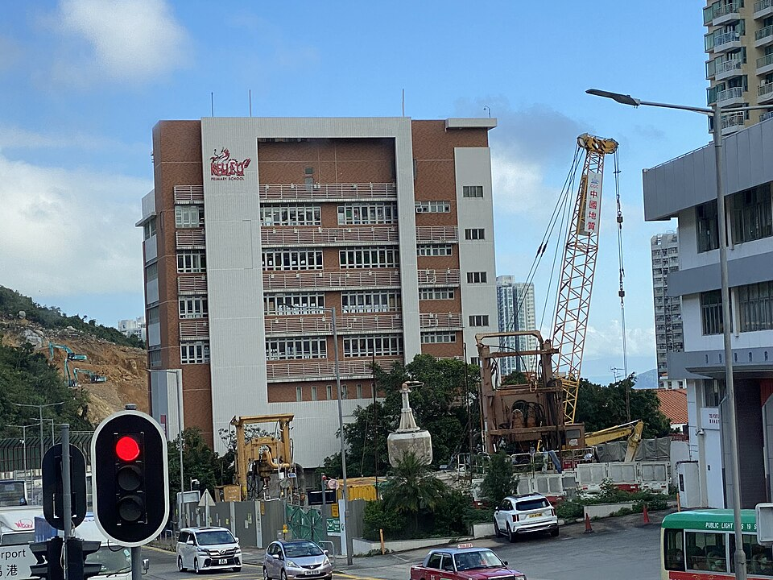

켈릿 스쿨 포크풀람 캠퍼스 · 사진: LN9267 / Wikimedia Commons, CC BY-SA 4.0
켈릿 스쿨(Kellett School) — 홍콩의 영국식 국제학교, 학년을 Year로 세는 곳
1. 켈릿 스쿨은 어떤 학교인가
· 설립 — 1976년, 홍콩의 영어권 가정 학부모들이 비영리 단체 형태로 세운 것으로 알려져 있습니다. 영리 법인이 아니라 학부모 회원제로 출발한 학교라는 점이 자주 언급됩니다.
· 캠퍼스 — 홍콩섬 남쪽 포크풀람(Pok Fu Lam)의 원래 캠퍼스(프렙 스쿨)와, 2013년에 문을 연 구룡베이(Kowloon Bay) 캠퍼스로 알려져 있습니다. 구룡베이 쪽에 시니어 스쿨이 있는 것으로 알려져 있어, 고학년은 보통 이쪽을 보게 됩니다.
· 학년 — 4세~18세, Reception부터 Year 13까지 이어지는 통학형 남녀공학으로 알려져 있습니다.
· 교육과정 — 영국 국가교육과정(English National Curriculum). Year 10~11에 I/GCSE, Year 12~13에 A-Level을 치르는 구조로 알려져 있습니다.
· 인증 — 영국 교육부의 해외 영국학교 감사인 BSO(British Schools Overseas) 평가를 받은 학교로 알려져 있습니다.
※ 학비·정원·합격률 등 해마다 바뀌는 수치는 이 글에서 다루지 않습니다. 학교 요강을 직접 확인하세요.
2. 먼저 풀어야 할 것 — Year와 Grade 맞추기
영국식 학교에서 가장 먼저 헷갈리는 것이 학년 이름입니다. 같은 나이인데 부르는 이름이 하나씩 밀려 있어, "우리 아이는 중학교 2학년인데 Year 몇이냐"에서 상담이 멈추는 경우가 많습니다. 대략의 대응은 이렇습니다.
| 영국식(켈릿) | 미국식 학년 | 한국 학년(대략) | 그 학년의 과제 |
|---|---|---|---|
| Year 1~6 | G1~G5 무렵 | 초등 저·중학년 | 읽기 레벨 · 영어로 설명하기 |
| Year 7~9 | G6~G8 무렵 | 초6~중2 | 과목별 글쓰기 · GCSE 과목 탐색 |
| Year 10~11 | G9~G10 무렵 | 중3~고1 | I/GCSE 2년 과정 · 외부 시험 답안 |
| Year 12~13 | G11~G12 무렵 | 고2~고3 | A-Level 3~4과목 · 대학 지원 |
표를 나이 대응표로만 보면 놓치는 것이 있습니다. Year 10과 Year 12는 2년짜리 과정의 출발선이라는 점입니다. 그래서 학기 중간이나 Year 11·Year 13에 편입하면 이미 시작된 시험 과정에 올라타는 것이 됩니다. 켈릿에 문의할 때 "몇 학년에 자리가 있나요"만 묻지 말고 "그 학년이 시험 과정의 몇 년차인가요"를 함께 물어보셔야 하는 이유입니다.
3. 홍콩의 다른 학교와 무엇이 다른가
홍콩에서 한국 가정이 함께 올려놓고 비교하는 학교들을 고등 과정의 끝으로 갈라 보면 성격이 분명해집니다.
· 홍콩국제학교(HKIS) — 미국식. 내신(GPA)과 AP로 마무리.
· CDNIS(캐나다국제학교) — IB + 캐나다 온타리오 졸업장.
· 차이니즈 인터내셔널(CIS) — IB + 영어·중국어 이중언어.
· 저먼 스위스(GSIS) — 영어 스트림은 IGCSE·A-Level, 독일어 스트림은 아비투어.
· 켈릿 스쿨 — 영국식 한 줄. Reception부터 A-Level까지 영국 국가교육과정으로 이어지는 구조로 알려져 있습니다.
정리하면 켈릿의 성격은 "선택지를 넓히는 학교"가 아니라 "한 길을 끝까지 가는 학교"에 가깝습니다. 아이가 이미 영국계 학교를 다녔다면 연결이 매끄럽고, 한국 학교나 미국식 학교에서 넘어오면 평가 방식부터 새로 배워야 합니다.
4. 한국(주재원) 학생이 겪는 어려움
· Year 7~9는 조용히 지나가는 함정이다. 외부 시험이 없어 성적 압박이 적어 보이지만, 이 3년이 Year 10에 고를 GCSE 과목을 정하는 기간입니다. 여기서 과학·수학 기초가 흔들리면 선택지 자체가 줄어듭니다.
· Year 10 편입이 가장 위험하다. 2년짜리 I/GCSE 과정의 1년차에 들어가는데, 영어가 아직 학습영어 단계가 아니면 수업을 따라가면서 시험 형식까지 동시에 배워야 합니다. → EAL(영어 지원)
· 답안 형식이 점수다. 영국식 외부 시험은 배점에 맞춰 분량과 근거 개수를 맞추는 것이 채점 기준입니다. 4점짜리 문항에 두 줄만 쓰면, 내용이 맞아도 점수가 안 나옵니다.
· A-Level은 과목이 줄어든다. Year 12에 3~4과목으로 좁히는 순간 전공 방향이 사실상 정해집니다. 미국식처럼 "일단 넓게 듣고 나중에 정하기"가 잘 통하지 않습니다. → A-Level 과목 선택
· 영어로 된 수학. 알지브라 용어가 영어이고, 서술형에서 풀이 과정(show your work)을 영어 문장으로 적어야 단계 점수를 받습니다.
5. 그래서 이렇게 준비합니다
📖 영어과외 — 읽는 영어에서 답안 쓰는 영어로
Year 7~9에는 읽기 레벨과 과목별 어휘를 올리면서 주장 → 근거 → 분석의 뼈대를 잡습니다. Year 10부터는 성격이 완전히 바뀌어, I/GCSE 기출 문항의 배점에 맞춰 문단 수와 근거 개수를 맞추는 훈련을 합니다. 영어 자체를 늘리는 공부와 답안을 만드는 공부는 다른 일이라, 시기를 섞으면 둘 다 어정쩡해집니다. (영어 공부법 참고)
📐 수학과외 — 알지브라 용어 + 단계 점수
알지브라·지오메트리 개념을 한국식 풀이와 영어 용어로 연결하고, 풀이를 영어 문장으로 적는 습관을 들입니다. 영국식 수학은 답이 틀려도 과정에서 점수를 주기 때문에, 쓰는 습관이 곧 점수입니다. 여기서 잡아둔 서술이 A-Level 수학으로 그대로 이어집니다. (알지브라 공부법 참고)
🗺️ 편입 시기별 우선순위
· Year 1~6 편입 — 읽기 레벨과 말하기. 수업 참여가 곧 평가입니다.
· Year 7~9 편입 — 가장 여유 있는 시기입니다. 이때 영어를 학습영어 수준으로 끌어올려 두면 Year 10이 편해집니다.
· Year 10 편입 — GCSE 과목 조합부터 함께 봅니다. 과목이 2년 뒤 A-Level 선택지를 결정합니다. → IGCSE 과목 선택
· Year 12 편입 — 가장 부담이 큰 시기입니다. A-Level 3~4과목 확정과 대학 지원 일정을 먼저 잡고 시작하세요. → 입학 준비 총정리
6. 홍콩의 강점 — 시차 1시간 화상과외
홍콩은 한국과 시차가 1시간이라 방과 후 화상 1:1 수업을 붙이기 좋습니다. 현지 학원은 홍콩 로컬 시험(DSE) 중심인 곳이 많아, I/GCSE·A-Level 답안 형식을 한국어로 짚어 줄 곳을 찾기가 쉽지 않습니다. 아이의 실제 과제와 채점된 답안지를 화면에 놓고 "왜 여기서 점수가 깎였는지"부터 보는 방식이 가장 빠릅니다. 홍콩 전반 안내는 홍콩 국제학교 과외·홍콩 학원과 1:1 과외 비교에 정리했습니다.
정리
켈릿 스쿨은 1976년 학부모들이 세운 것으로 알려진 홍콩의 영국식 국제학교입니다. ① 학년은 Year로 세고, ② Year 10·Year 12는 2년 과정의 출발선이며, ③ 점수는 답안 형식에서 갈리고, ④ A-Level에서 과목이 3~4개로 줄어듭니다. 편입 시기를 어디로 잡느냐에 따라 준비가 완전히 달라지는 학교입니다. 30분 무료 상담으로 우리 아이가 어느 Year에 어떻게 들어가야 하는지부터 점검해 보세요.